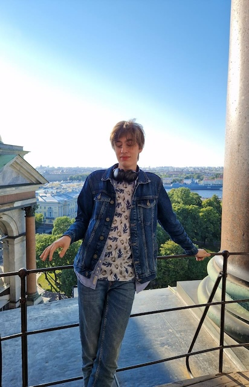
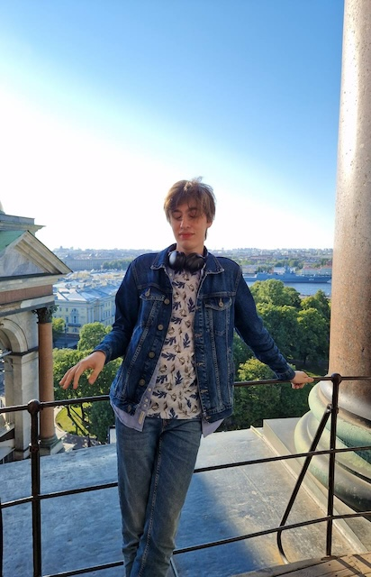

Меня зовут Лёха (Степанов Алексей Александрович), мне 21 годик
Я студент 4го курса Факультета компьютерных наук Высшей Школы Экономики, а также простой работяга в Умном доме Яндекса
— По жизни притворяюсь бэкенд-разработчиком, пишу на Go и стараюсь развиваться в этом направлении
— Подробнее на мои рабочие скиллы можно посмотреть здесь
— Геймер и любитель истории со стажем
— Точно НЕ анимешник
— Тру фанат Мэйби Бэйби и Rammstein
— Придерживаюсь либертарных взглядов
— Мечтаю побывать в городе Бебра, потенциально лучшем месте на планете
— На данный момент проживаю в главном мегаполисе России БалашИхе (не БалАшихе!)